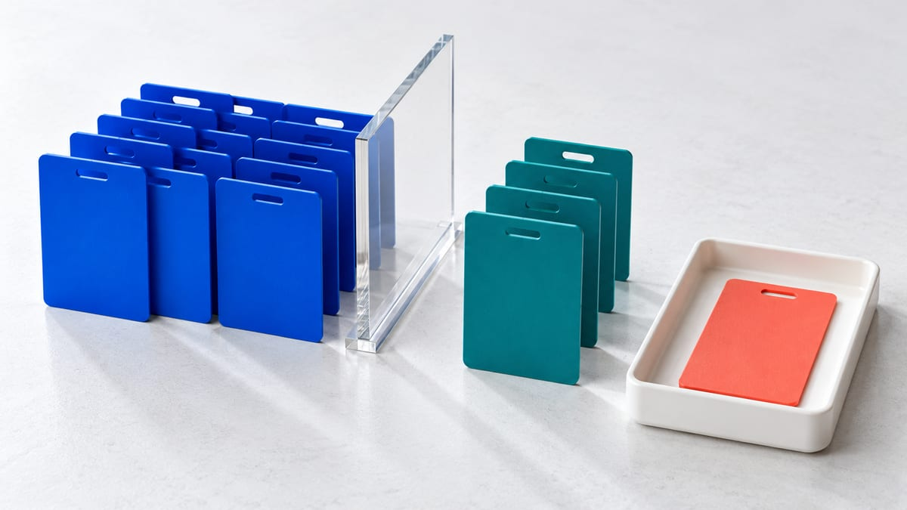

Remarketing
再营销广告基础：适合什么时候做
更新于 · 昆明振润达商贸有限公司

再营销用于重新触达曾访问网站、使用应用或与品牌产生互动的人群。它更适合决策周期较长、已有可用流量且能够合规建立受众的业务，不是冷启动时自动产生需求的工具。本文以 Google Ads 自有数据细分受众为主；Meta 的名称、资格和扩展选项应单独核对，不能直接套用。
建立了列表，不等于广告只向列表内用户投放。先检查数据是否有权使用、受众是否具备投放资格，以及系列采用的是观察、定位还是可扩展的信号。本教程只提供核对方法，未读取或修改你的广告账户、安装标签或上传客户资料。
什么时候值得启用
当网站已有稳定访问、用户会多次比较、不同页面能反映购买阶段，并且主要转化追踪准确时，再营销更容易发挥作用。电商可覆盖浏览商品、加购和放弃结账；B2B 可区分阅读服务、查看案例、下载资料和提交过咨询的人。
如果网站每天访问很少、所有流量都进入同一页面，或连主要转化都无法确认，先完善获客、页面和转化追踪。过小的人群可能无法投放，也难以形成可靠结论。
启用前按四项检查，不先承诺能投
- 业务与功能是否允许：先核对推广内容及适用的个性化广告限制。敏感兴趣类别不能直接套用普通回访列表方案；列表能建立也不代表可以用于该业务。
- 来源与使用依据：分清网站访问者、分析受众和客户名单。Customer Match 只能使用在第一方情境中取得的客户资料，并核对适用披露、同意及账户功能资格；购买或抓取的名单不能当作自有客户资料。
- 实际可投规模：看目标广告网络的受众状态和可覆盖人数，而不是把 GA4 浏览量、总用户数或 CRM 联系人数直接当作可投受众。
- 投放范围与目标：确认是只做回访，还是也希望拓展新用户，再核对下表中的观察、定位、扩展与排除配置。名称叫“再营销”并不会自动限定范围。
截至本次核对，Google 的受众管理说明（英文）列出展示、搜索与 YouTube 通常需要近 30 天至少 100 位活跃访问者或用户，并注明旧客户列表的适用例外。这里的活跃用户口径不等于 GA4 总用户数；门槛、名单状态和网络资格须一起看，达到人数也不保证获得展示。不要照搬旧文章中的“所有搜索受众都要 1,000 人”，也不要把本文当作所有名单类型的完整资格规则。
Customer Match 政策（英文）还区分观察、排除与定位等功能的访问条件。网站访问者受众和客户名单不是同一套资格判断；本篇不建议为解锁功能而额外充值或上传资料。
六项受众边界：收集、资格和投放范围分开看
| 核对项 | 能说明什么 | 不能据此推断什么 |
|---|---|---|
| 受众来源与规则 | 人员如何进入列表、多久保留、是否有适用使用依据 | 装了标签不等于任何页面、任何资料都可用于广告个性化 |
| 网络资格与状态 | 该网络上可覆盖的规模、名单是否兼容或受限 | 网站总访问、客户数或列表总数不等于当前可投人数 |
| 搜索广告“观察” | 观察所加受众的表现，相关出价用途还需结合策略核对 | 观察不会限制投放范围，添加回访列表不等于只投老访客 |
| 搜索广告“定位” | 将符合受众的用户纳入投放限制，并结合其他条件 | 仍需满足系列适用的搜索、地区、资格和审核条件，不代表给列表中每个人展示 |
| 适用系列的优化型定位 | 所选细分受众可作为提示，系统可能寻找提示以外的用户 | 优化型定位可超出所选受众；不能把全部流量都称为回访流量 |
| 排除设置 | 按实际支持范围排除特定名单或内容，并核对所在层级 | 排除不等于删除个人资料，也不应承诺对某个实名用户逐次保证不展示 |
Google 的搜索广告自有数据受众说明（英文）区分观察与定位；优化型定位说明（英文）解释信号外拓展。选项及报告按实际系列类型确认，不把展示广告的开关写成所有系列都有的开关；PMax 的信号边界可另看PMax 入门控制表。
按意图和时间窗口分层
- 只访问首页、尚未查看具体内容的人。
- 浏览产品、服务、价格或案例等高意图页面的人。
- 加购或开始表单但未完成的人。
- 已经购买、提交咨询或成为客户的人，通常应从获客广告中排除或使用不同信息。
时间窗口按业务决策周期、适用期限和实际规模设计。7 天、30 天只是可能的方案，不是统一必填值；窗口越长不一定越好。数月前一次无意访问与昨天放弃结账，通常不应直接使用同一信息。若做互斥分层，写明每组纳入和排除规则，不能只靠列表名称认为没有重叠。
素材应补充下一步信息
再营销不是把原广告无限重复。首页访客可看到品类与信任信息；产品访客可看到规格、对比和案例；放弃表单者可获得流程说明或其他联系方法；老客户可看到补充服务。任何优惠、稀缺或客户评价都必须真实。
结合平台实际提供的频次和反馈、点击及有效转化复盘，不假设所有系列都有相同的频次上限控件。表现下降时，先检查规模、素材、落地页承接和实际需求，再决定调整；已看到某张广告的人也不一定已提交有效询盘。
上线前检查隐私和数据
在隐私政策中准确说明数据用途，并核对适用披露、同意和平台要求。不要把姓名、邮箱、电话写入广告 URL 或普通标签参数；经授权的 Customer Match 资料应通过获准接口处理，而不是塞入网址。选择美国或香港不等于自动完成合规审查，本文不替代当地法律意见。
涉及敏感兴趣类别时，先阅读个性化广告定位限制（英文），区分允许的受众功能。不要通过换标签名称、隐藏页面含义、买名单或扩大窗口规避限制。平台对排除名单的规定也不支持承诺对指定用户逐次保证展示或不展示。
- 记录受众来源、业务用途、保留期限和撤销处理方式。
- 由获授权人员核对适用的同意状态与标签控制；教程示例不是已完成的生产测试。
- 检查已转化用户排除所用的事件是否确实代表成功，而不是仅点击表单或聊天按钮。
- 在可授权测试范围内验证规则和报告，再考虑上线。
- 按实际订单或线索质量复盘，未知状态不填成零或自动记为合格。
三种假设排查：先看证据，再决定是否调整
以下为原创教学情境，不是客户案例、真实账户操作或效果保证。改变受众设置、部署标签和上传名单都需另行确认实际权限。
- GA4 有 1,000 次浏览，广告列表却只有 80 位可用用户。浏览次数与广告资格不是同一口径；先记录网络、时间范围、用户定义和列表状态。如果未达到该网络当前门槛，先排查正常采集与匹配条件，或继续做适合的获客和内容承接。不要购买名单补人数，也不把未投放直接归因为出价太低。
- 选了回访列表，报告仍出现新用户。先查搜索广告是不是“观察”，或适用系列是否使用优化型定位等扩展机制，再核对报告口径。若确需仅做回访，由有权限的人评估实际支持的范围设置；不能只凭看到新用户就判定平台出错，也不能把扩展后的整体转化当作纯回访效果。
- 计划按敏感兴趣页面访问记录建立名单。先暂停这一计划的执行，核对业务与政策适用范围，再讨论允许的推广方式。即使已有用户数、真实资料或某种同意，也不能据此跳过平台限制；不提供改名或隐藏内容的规避方案。
四项复盘记录与后续阅读
- 来源与资格：列表类型、业务用途、网络、状态、时间范围及可用规模，保留核对日期。
- 实际范围：系列和广告组、观察／定位、适用扩展、排除及地区语言设置，记录而不凭名称猜测。
- 结果口径：花费、可用的覆盖／频次、点击、成功询盘与合格阶段分别记录；名单、设备和时段不同不能直接作效果比较。
- 决定与责任：写清保持观察、修正采集、暂缓投放或评估设置的理由、负责人和验收方法；样本不足不宣布测试胜出。
可继续阅读搜索词优化和预算节奏，把回访与整体获客分别评估。本站合作以已公示的服务范围与实际书面确认为准，本教程不增加数据上传、价格或效果承诺。